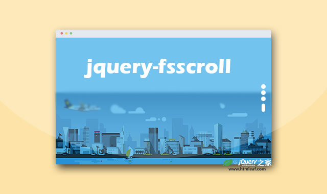

支持移动端的纯js轮播图插件awesome-slider
a vanilla javascript slider/carousel/swiper plugin.
jQuery之家
返回下载页
鼠标按住/手指滑动一定范围会切换图片, 鼠标/手指停留在轮播区域, 轮播会停止, 当离开区域, 轮播会继续
如果你喜欢这个插件，那么你可能也喜欢:
时尚简洁的js轮播图特效插件

jquery的全屏轮播插件jquery-fsscroll